Same world in every comp: paper header, deep oxblood gallery, framed square plates, and a Typography chapter that breaks the ground. Only the navigation differs. The plates are abstract stand-ins, not Abby's work.
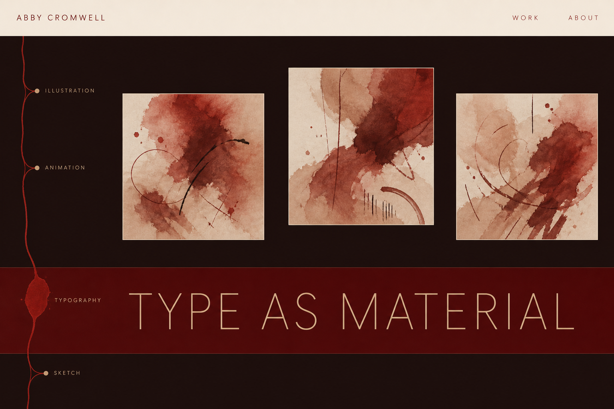
A vein down the edge, branching once per chapter. The active node swells wet red.
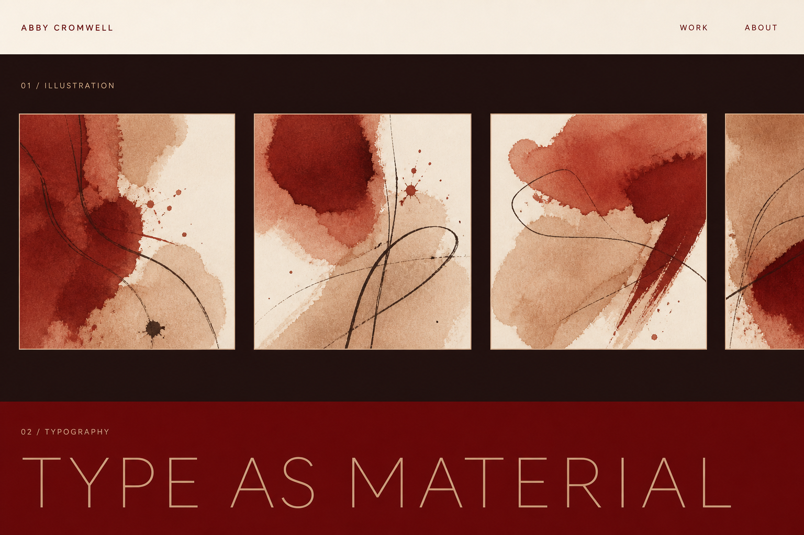
One chapter fills the screen, plates running horizontally off the right edge.
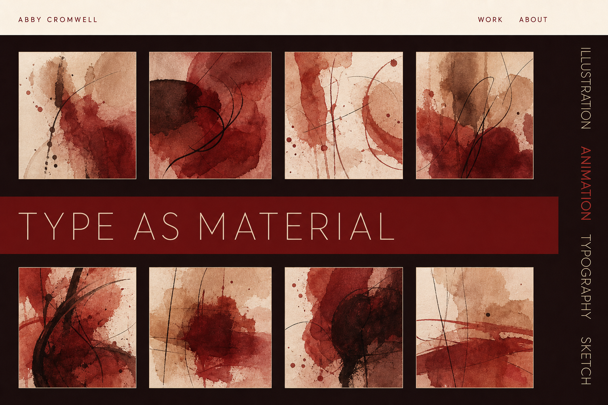
Chapter names rotated down the outer margin, like type on a book's fore-edge.
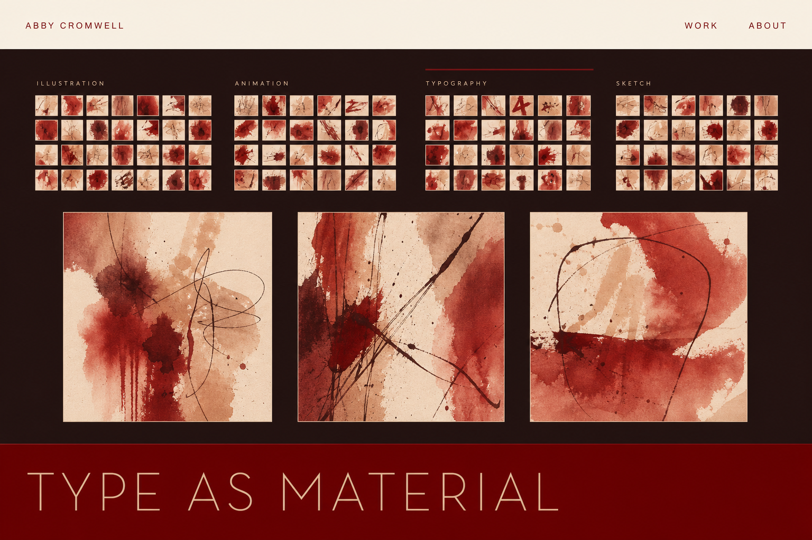
Every piece as a tiny plate on one sheet that never leaves. The sheet is the map.
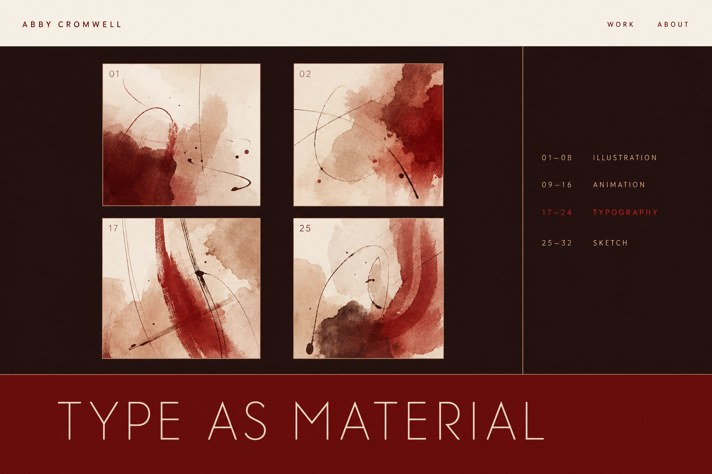
Plates carry numerals; a fixed legend says what each number is. Anatomy-atlas convention.
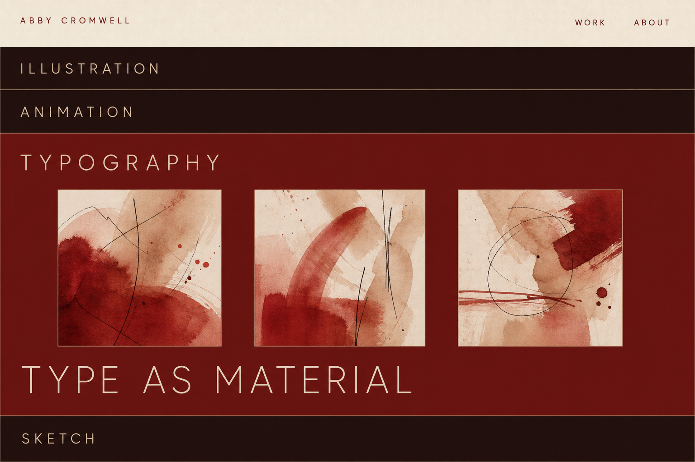
Four bands, one open at a time, so all four headings stay on screen.
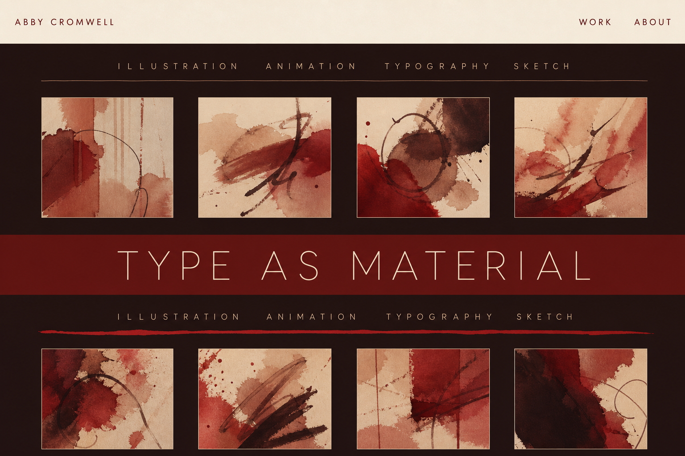
No fixture. Contents reprints between chapters on a capillary that deepens as you descend.
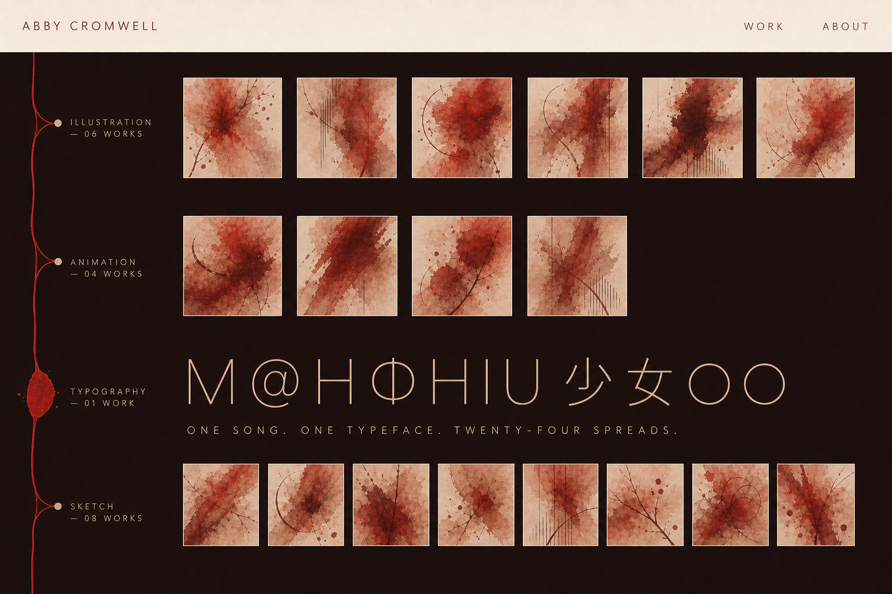
Direction 01 rendered again, alongside the new set for a fair comparison.
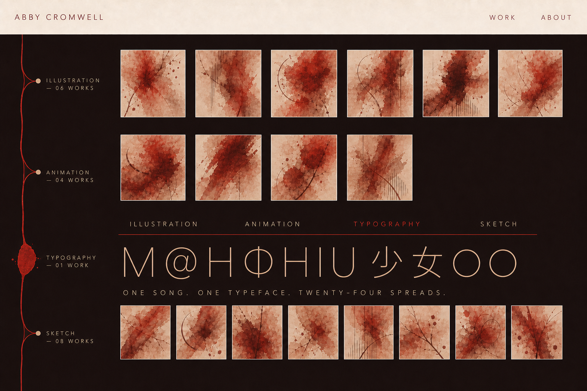
The vein carries position continuously; the reprinted row carries jumps. Neither sits on the artwork.
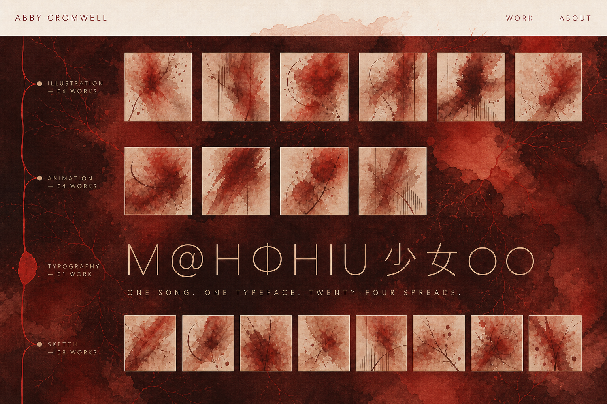
The dark is the homepage wash concentrated, veins still visible, rather than a flat dark room.
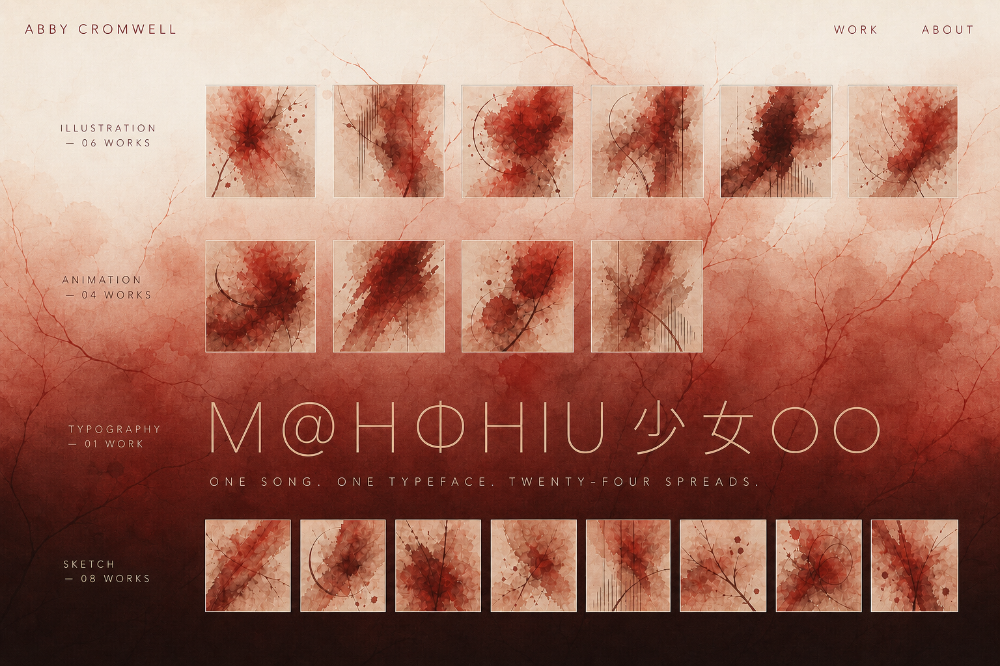
Paper at the top reaching deep brown-red only at the very bottom. Most of the page is mid-tone. Closest to Abby's "begin lighter, transition toward dark as the viewer scrolls."
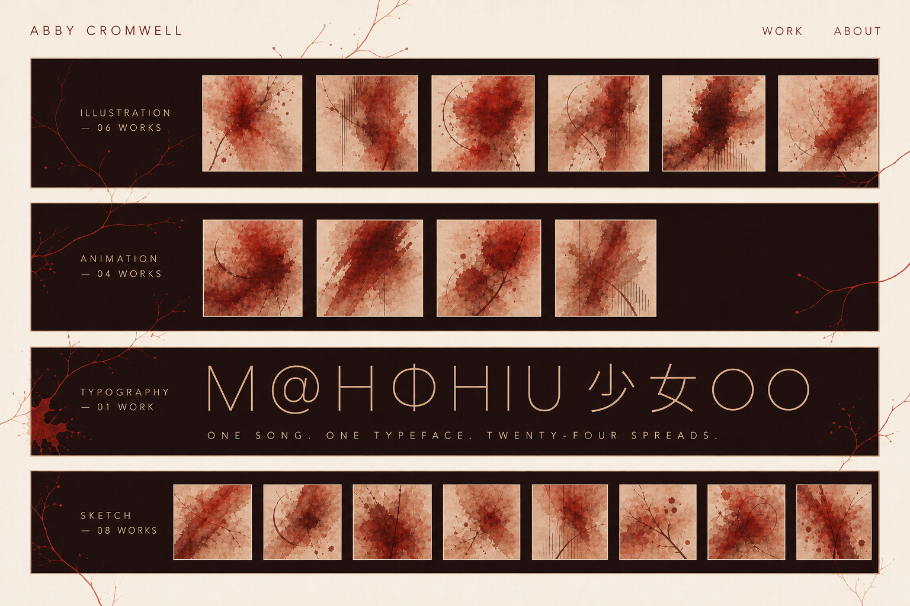
Ground stays paper; the gallery is dark panels inset with wide pale margins. Artwork on paper, not a dark page.
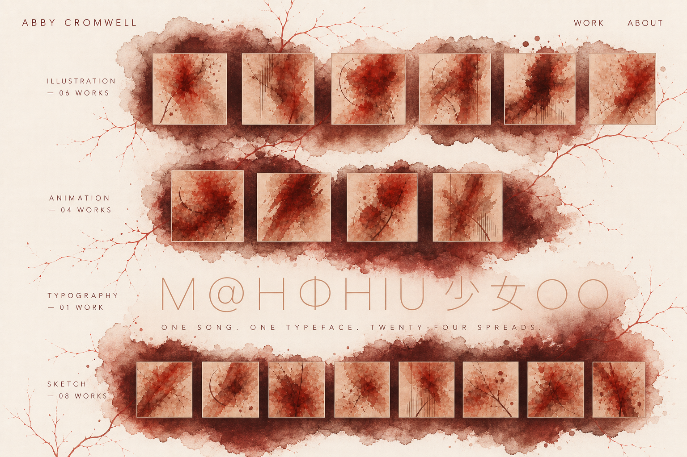
Darkness only as soft-edged pools bleeding behind each chapter, feathered like the homepage pods.